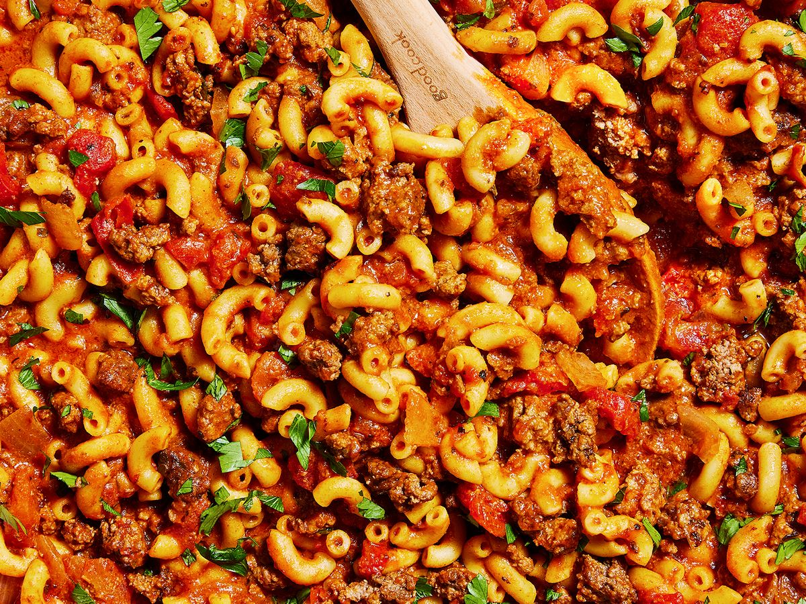

Grandmas Recipes
Goulash

What You'll need
- 3lbs of 93/7 ground beef
- 29oz of tomato sauce
- 2 red bell peppers
- 1 onion, sweet yellow
- fat free shreaded mozzarella cheese
- 2 boxes of chickpea cavatappi pasta (16 oz per-box I like banza)
how to make it
- thaw out your ground beef
- chop your onion and bell peppers
- add to a pan on low to medium heat with a little bit of coconut oil (I like joe rogans stuff)
- wait a bit for the veggies to cook and then add your ground beef. season with salt, pepper, paprika, chili powder and whatever else you like
- after your meat is cooked add your tomato sauce
- once it is at the right consistency add 107grams of mozzarella cheese
- portion each meal and your done!
Each meal should be around 500 calories